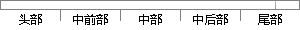

如何将他们的意见转化为流失原因加以评估，同时如何实现专家评估和客户意见的有效集成，获得一个公平、合理的评估结果，是客户流失原因分析与评估的又一研究方向。
片段位置图

相似结果|
1
原句片段：如何将他们的意见转化为流失原因加以评估，同时如何实现专家评估和客户意见的有效集成
相似片段 1：如何将他们的意见转化为流失原因加以评估,同时如获得一个何实现专家评估和客户意见的有效集成, 2260计算机集成制造系统第18卷 公平、合理的评估结果,是客户流失原因...
2
原句片段：，获得一个公平、合理的评估结果，是客户流失原因分析与评估的又一研究方向。
相似片段 1：如何将他们的意见转化为流失原因加以评估,同时如获得一个何实现专家评估和客户...公平、合理的评估结果,是客户流失原因分析与评估的又一研究方向。 ()客户流失挽留...
相似片段 2：为了科学、合理地分析评估结果,应 用基于正态分布的...,曹杰等:B2C电子商务客户流失原因评估研究 标口1。...计算过程要给出上述10个属性的权重,不失科学与公平...
|
※ 片段修改建议 ※
近似词参考：- 意见：定见
- 原因：缘由 缘故原由 缘故
- 如何：若何 怎样
- 意见：定见
- 有效：有用
- 获得：取得 得到 获取
- 公平：公允 公正 平正
- 合理：公道
- 结果：成果 成绩 成效 后果 了局 效果
- 原因：缘由 缘故原由 缘故
- 分析：阐发 阐明 剖析
- 研究：钻研
- 方向：标的目的 偏向
系统自动生成语句：若何将他们的定见转化为流失缘由加以评估，同时若何实现专家评估和客户定见的有用集成，取得一个公允、公道的评估成果，是客户流失缘由阐发与评估的又一钻研标的目的。
注：本片段修改建议为系统自动生成，仅供参考。